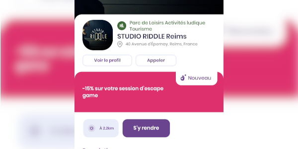

Deal & Co
Durant mon alternance, j'ai travaillé sur l'API de notre client Deal & Co
Cette application mobile permet de trouver des réductions, cadeaux, ... chez les partenaires autour de vous.
23 ans, curieux et passioné de développement, je passe beaucoup de mon temps libre à "bidouiller" et travailler sur mes projets persos.
Après un baccalauréat scientifique, j'ai obtenu mon DUT Informatique à l'IUT de Reims. Depuis, je suis en alternance en école d'ingénieur au CNAM.
J'effectue mon alternance chez Un-zéro-un, une agence de communication située à Charleville-Mézières
Voici la liste des projets sur lesquels j'ai travaillé lors de ma vie professionnelle.
Durant mon alternance, j'ai travaillé sur l'API de notre client Deal & Co
Cette application mobile permet de trouver des réductions, cadeaux, ... chez les partenaires autour de vous.
Développé par le Lab'S DN au CNAM, Gescicc@ est le logiciel de gestion de scolarité auquel j'ai participé durant mes deux premières années d'alternance.
Il permet une gestion exaustive des besoins d'un centre et est utilisé par la plus grande majorité des centres CNAM dans le monde.
Après mon stage, je suis resté un mois chez Un-zéro-un. J'ai eu l'occasion de travailler entre autre sur le marketplace Coté-Meuse
J'ai ajouté certaines fonctionnalités au panel administrateur / marchand.
Voici la liste des projets que j'ai effectué sur mon temps libre.
Scinna est un logiciel permettant de partager ses captures d'écrans
Le but de cette application est de pouvoir l'héberger soi-même simplement tout en ayant des fonctionnaités complètes et utiles.
Scinna fait parti d'un groupement d'applications: Scinna (Le serveur), Scinnapse (L'application bureau), Scinnamon (L'application mobile) et CLIent (Le client terminal).
Développé en Golang et React, il s'agit de mon plus gros projet personnel à ce jour.
Cards Against Humanity est un jeu de carte opensource (équivalent à BlancMangerCoco ou Limite Limite).
Cette version permet de jouer en ligne avec ses amis à ce jeu.
Pour des raisons de légalité, les cartes ne sont pas fournies mais un format json permet d'importer facilement vos decks personnels
Développé en Golang et VueJS avec les websockets, le projet n'est pas disponible publiquement pour l'instant.
Ce logiciel destiné à être hébergé et utilisé en SaaS par des streameurs permet de créer des blind test
Un système de score et de leaderboard à été implémenté, tout étant automatisé avec l'API Twitch
Créé pour la chaine de JosetteLaChèvre, son utilisation sera étendue à d'autres une fois jugé stable.
Jeu de quizz sur ses amis, clone opensource de The Test (en pause)
SnapDesk était un client Snapchat que j'avais développé pour le PC en Java.
Tout était fonctionnel, cependant avec les fortes restrictions établies par Snap Inc. dès 2014 ont été beaucoup trop problématiques pour continuer ce projet.
Petit plugin TemperMonkey permettant d'ajouter une horloge dans la barre de vidéos de Youtube
Cela permet de ne pas avoir à sortir du plein-écran pour lire l'heure.
Voici mes projets divers, ce sont des projets personnels qui ne vont pas dans les autres catégories.
Le thème Synthwave de robb0wen pour Visual Studio Code fait parti de mes préférés. Je m'en suis fortement inspiré pour créer ce site.
J'ai ensuite décidé de créer des thèmes Stylus pour divers sites web.
Pour l'instant, HackerNews, Lobste.rs et bientôt Twitter.
Un petit stand à Zippo à imprimer en 3D pour pouvoir exposer sa collection